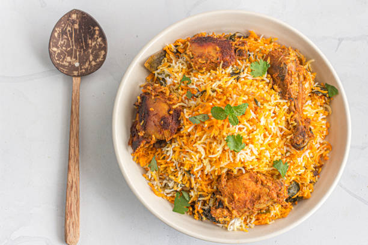

Hyderabadi Dum Biryani

Description
Dum Biryani is a classic Mughal Nizam dish with an eye-catching aromatic rice loved by all. Once you know the right recipe for dum biryani, you will fall in love with it
Ingredients
Marinade:
- 10 Black Perpercorns
- 6 Whole cloves
- 5 cardamom pods
- 2 cinnamon sticks
- 0.5 tablestoon black cumin seeds
- 1 bunch of fresh mint leave
- 1 cup of plain yogurt
- 2 tablespoons of lemon juice
- 2 tablespoons of ginger-garlic paste
- 2 tablespoons of chile powder
- 1 tablespoon of biryani masala
- 0.25 tablespoon of turmeric powder
Biryani
- 3.5 cups water
- 2.5 cups basmati rice
- 4 bay leaves
- 0.5 cup warm milk
- 1 pinch of saffron threads
- 0.25 cup ghee
- 2 onions, thinly sliced
- 2 green chile peppers, chopped
Steps
- Place black peppercorns, cloves, cardamom, cinnamon sticks, star anise, and kala jeera in a spice grinder; grind into a fine powder.
- Place cilantro and mint leaves in a food processor; pulse until coarsely chopped.
- Combine spice powder, cilantro-mint mixture, yogurt, lemon juice, ginger-garlic paste, chile powder, biryani masala powder, and turmeric in a large bowl. Add chicken; turn to coat evenly. Cover with plastic wrap and let marinate in the refrigerator, about 2 hours.
- Bring water and rice to a boil in a saucepan; add 2 bay leaves. Reduce heat to medium-low, cover, and simmer until rice is partially cooked through and still firm, about 5 minutes. Drain.
- Combine milk and saffron in a small bowl; stir to combine.
- Heat ghee in a large pot with a tight-fitting lid over medium-high heat. Add onions; cook and stir until golden brown, about 15 minutes. Drain on paper towels. Reduce heat to low. Add remaining 2 bay leaves and chile peppers; cook and stir until fragrant, 1 to 2 minutes. Carefully remove 1 tablespoon of ghee from the pot; set it aside.
- Wipe excess marinade off the chicken, discarding marinade, and add to the pot. Cook over medium heat until no longer pink, about 2 minutes per side. Spread drained rice on top. Sprinkle onions on top of the rice. Drizzle reserved ghee and saffron milk over onions and rice.
- Cover the pot and cook over high heat, about 8 minutes. Reduce heat to low and continue cooking, about 5 minutes. Remove from heat and let stand, covered, until rice is tender and an instant-read thermometer inserted into the chicken reads 165 degrees F (74 degrees C), about 15 minutes.